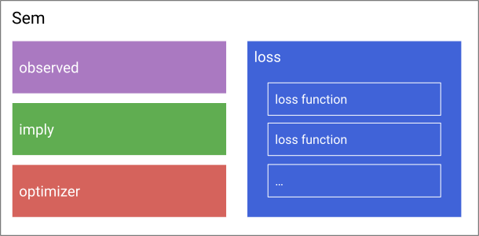
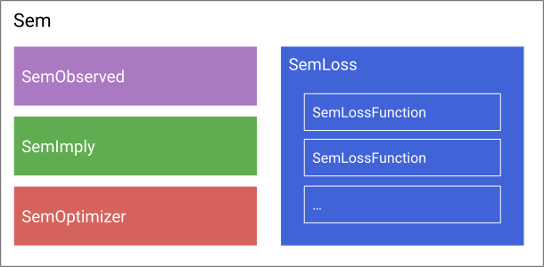

Our Concept of a Structural Equation Model
In our package, every Structural Equation Model (Sem) consists of three parts (four, if you count the optimizer):

Those parts are interchangable building blocks (like 'Legos'), i.e. there are different pieces available you can choose as the observed slot of the model, and stick them together with other pieces that can serve as the implied part.
The observed part is for observed data, the implied part is what the model implies about your data (e.g. the model implied covariance matrix), and the loss part compares the observed data and implied properties (e.g. weighted least squares difference between the observed and implied covariance matrix). The optimizer part is not part of the model itself, but it is needed to fit the model as it connects to the optimization backend (e.g. the type of optimization algorithm used).
For example, to build a model for maximum likelihood estimation with the NLopt optimization suite as a backend you would choose SemML as a loss function and SemOptimizerNLopt as the optimizer.
As you can see, a model can have as many loss functions as you want it to have. We always optimize over their (weighted) sum. So to build a model for ridge regularized full information maximum likelihood estimation, you would choose two loss functions, SemFIML and SemRidge.
In julia, everything has a type. To make more precise which objects can be used as the different building blocks, we require them to have a certain type:

So everything that can be used as the 'observed' part has to be of type SemObserved.
Here is an overview on the available building blocks:
SemObserved | SemImplied | SemLossFunction | SemOptimizer |
|---|---|---|---|
SemObservedData | RAM | SemML | SemOptimizerOptim |
SemObservedCovariance | RAMSymbolic | SemWLS | SemOptimizerNLopt |
SemObservedMissing | ImpliedEmpty | SemFIML | |
SemRidge | |||
SemConstant |
The rest of this page explains the building blocks for each part. First, we explain every part and give an overview on the different options that are available. After that, the API - model parts section serves as a reference for detailed explanations about the different options. (How to stick them together to a final model is explained in the section on Model Construction.)
The observed part aka SemObserved
The observed part contains all necessary information about the observed data. Currently, we have three options: SemObservedData for fully observed datasets, SemObservedCovariance for observed covariances (and means) and SemObservedMissing for data that contains missing values.
The implied part aka SemImplied
The implied part is what your model implies about the data, for example, the model-implied covariance matrix. There are two options at the moment: RAM, which uses the reticular action model to compute the model implied covariance matrix, and RAMSymbolic which does the same but symbolically pre-computes part of the model, which increases subsequent performance in model fitting (see Symbolic precomputation). There is also a third option, ImpliedEmpty that can serve as a 'placeholder' for models that do not need an implied part.
The loss part aka SemLoss
The loss part specifies the objective that is optimized to find the parameter estimates. If it contains more then one loss function (aka SemLossFunction)), we find the parameters by minimizing the sum of loss functions (for example in maximum likelihood estimation + ridge regularization). Available loss functions are
SemML: maximum likelihood estimationSemWLS: weighted least squares estimationSemFIML: full-information maximum likelihood estimationSemRidge: ridge regularization
The optimizer part aka SemOptimizer
The optimizer part of a model connects to the numerical optimization backend used to fit the model. It can be used to control options like the optimization algorithm, linesearch, stopping criteria, etc. There are currently three available backends, SemOptimizerOptim connecting to the Optim.jl backend, SemOptimizerNLopt connecting to the NLopt.jl backend and SemOptimizerProximal connecting to ProximalAlgorithms.jl. For more information about the available options see also the tutorials about Using Optim.jl and Using NLopt.jl, as well as Constrained optimization and Regularization .
What to do next
You now have an understanding of our representation of structural equation models.
To learn more about how to use the package, you may visit the remaining tutorials.
If you want to learn how to extend the package (e.g., add a new loss function), you may visit Extending the package.
API - model parts
observed
StructuralEquationModels.SemObserved — TypeSupertype of all objects that can serve as the observed field of a SEM. Pre-processes data and computes sufficient statistics for example. If you have a special kind of data, e.g. ordinal data, you should implement a subtype of SemObserved.
StructuralEquationModels.SemObservedData — TypeFor observed data without missings.
Constructor
SemObservedData(;
data,
observed_vars = nothing,
specification = nothing,
kwargs...)Arguments
data: observed data – DataFrame or Matrixobserved_vars::Vector{Symbol}: column names of the data (if the object passed as data does not have column names, i.e. is not a data frame)specification: optional SEM specification (SemSpecification)
Extended help
Interfaces
nsamples(::SemObservedData)-> number of observed data pointsnobserved_vars(::SemObservedData)-> number of observed (manifested) variablessamples(::SemObservedData)-> observed dataobs_cov(::SemObservedData)-> observed covariance matrixobs_mean(::SemObservedData)-> observed mean vector
StructuralEquationModels.SemObservedCovariance — TypeType alias for SemObservedData that has mean and covariance, but no actual data.
For instances of SemObservedCovariance samples returns nothing.
StructuralEquationModels.SemObservedMissing — TypeFor observed data with missing values.
Constructor
SemObservedMissing(;
data,
observed_vars = nothing,
specification = nothing,
kwargs...)Arguments
data: observed dataobserved_vars::Vector{Symbol}: column names of the data (if the object passed as data does not have column names, i.e. is not a data frame)specification: optional SEM model specification (SemSpecification)
Extended help
Interfaces
nsamples(::SemObservedMissing)-> number of samples (data points)nobserved_vars(::SemObservedMissing)-> number of observed variablessamples(::SemObservedMissing)-> data matrix (contains both measured and missing values)
Expectation maximization
em_mvn!(::SemObservedMissing) can be called to fit a covariance matrix and mean vector to the data using an expectation maximization (EM) algorithm under the assumption of multivariate normality. After, the following methods are available:
em_model(::SemObservedMissing)->EmMVNModelthat contains the covariance matrix and mean vector found via EMobs_cov(::SemObservedData)-> EM covariance matrixobs_mean(::SemObservedData)-> EM mean vector
StructuralEquationModels.samples — Functionsamples(observed::SemObservedData)Gets the matrix of observed data samples. Rows are samples, columns are observed variables.
See Also
StructuralEquationModels.observed_vars — Functionobserved_vars(semobj) -> Vector{Symbol}Return the vector of SEM model observed variable in the order specified by the model, which also should match the order of variables in SemObserved.
StructuralEquationModels.SemSpecification — TypeBase type for all SEM specifications.
implied
StructuralEquationModels.SemImplied — TypeSupertype of all objects that can serve as the implied field of a SEM. Computes model-implied values that should be compared with the observed data to find parameter estimates, e. g. the model implied covariance or mean. If you would like to implement a different notation, e.g. LISREL, you should implement a subtype of SemImplied.
StructuralEquationModels.RAM — TypeModel implied covariance and means via RAM notation.
Constructor
RAM(;specification,
meanstructure = false,
gradient = true,
kwargs...)Arguments
specification: either aRAMMatricesorParameterTableobjectmeanstructure::Bool: does the model have a meanstructure?gradient::Bool: is gradient-based optimization used
Extended help
RAM notation
The model implied covariance matrix is computed as
\[ \Sigma = F(I-A)^{-1}S(I-A)^{-T}F^T\]
and for models with a meanstructure, the model implied means are computed as
\[ \mu = F(I-A)^{-1}M\]
Interfaces
param_labels(::RAM)-> vector of parameter labelsnparams(::RAM)-> number of parametersram.Σ-> model implied covariance matrixram.μ-> model implied mean vector
RAM matrices for the current parameter values:
ram.Aram.Sram.Fram.M
Jacobians of RAM matrices w.r.t to the parameter vector θ
ram.∇A-> $∂vec(A)/∂θᵀ$ram.∇S-> $∂vec(S)/∂θᵀ$ram.∇M= $∂M/∂θᵀ$
Vector of indices of each parameter in the respective RAM matrix:
ram.A_indicesram.S_indicesram.M_indices
Additional interfaces
ram.F⨉I_A⁻¹-> $F(I-A)^{-1}$ram.F⨉I_A⁻¹S-> $F(I-A)^{-1}S$ram.I_A-> $I-A$
Only available in gradient! calls:
ram.I_A⁻¹-> $(I-A)^{-1}$
StructuralEquationModels.RAMSymbolic — TypeSubtype of SemImplied that implements the RAM notation with symbolic precomputation.
Constructor
RAMSymbolic(;
specification,
vech = false,
gradient = true,
hessian = false,
approximate_hessian = false,
meanstructure = false,
kwargs...)Arguments
specification: either aRAMMatricesorParameterTableobjectmeanstructure::Bool: does the model have a meanstructure?gradient::Bool: is gradient-based optimization usedhessian::Bool: is hessian-based optimization usedapproximate_hessian::Bool: for hessian based optimization: should the hessian be approximatedvech::Bool: should the half-vectorization of Σ be computed (instead of the full matrix) (automatically set to true if any of the loss functions is SemWLS)
Extended help
Interfaces
param_labels(::RAMSymbolic)-> vector of parameter idsnparams(::RAMSymbolic)-> number of parametersram.Σ-> model implied covariance matrixram.μ-> model implied mean vector
Jacobians (only available in gradient! calls)
ram.∇Σ-> $∂vec(Σ)/∂θᵀ$ram.∇μ-> $∂μ/∂θᵀ$ram.∇Σ_function-> function to overwrite∇Σin place, i.e.∇Σ_function(∇Σ, θ). Typically, you do not want to use this but simply queryram.∇Σ.
Hessians The computation of hessians is more involved. Therefore, we desribe it in the online documentation, and the respective interfaces are omitted here.
RAM notation
The model implied covariance matrix is computed as
\[ \Sigma = F(I-A)^{-1}S(I-A)^{-T}F^T\]
and for models with a meanstructure, the model implied means are computed as
\[ \mu = F(I-A)^{-1}M\]
StructuralEquationModels.ImpliedEmpty — TypeEmpty placeholder for models that don't need an implied part. (For example, models that only regularize parameters.)
Constructor
ImpliedEmpty(;specification, kwargs...)Arguments
specification: either aRAMMatricesorParameterTableobject
Examples
A multigroup model with ridge regularization could be specified as a SemEnsemble with one model per group and an additional model with ImpliedEmpty and SemRidge for the regularization part.
Extended help
Interfaces
param_labels(::ImpliedEmpty)-> Vector of parameter labelsnparams(::ImpliedEmpty)-> Number of parameters
loss functions
StructuralEquationModels.SemLoss — TypeSemLoss(args...; loss_weights = nothing, ...)Constructs the loss field of a SEM. Can contain multiple SemLossFunctions, the model is optimized over their sum. See also SemLossFunction.
Arguments
args...: MultipleSemLossFunctions.loss_weights::Vector: Weights for each loss function. Defaults to unweighted optimization.
Examples
my_ml_loss = SemML(...)
my_ridge_loss = SemRidge(...)
my_loss = SemLoss(SemML, SemRidge; loss_weights = [1.0, 2.0])StructuralEquationModels.SemLossFunction — TypeSupertype for all loss functions of SEMs. If you want to implement a custom loss function, it should be a subtype of SemLossFunction.
StructuralEquationModels.SemML — TypeMaximum likelihood estimation.
Constructor
SemML(;observed, meanstructure = false, approximate_hessian = false, kwargs...)Arguments
observed::SemObserved: the observed part of the modelmeanstructure::Bool: does the model have a meanstructure?approximate_hessian::Bool: if hessian-based optimization is used, should the hessian be swapped for an approximation
Examples
my_ml = SemML(observed = my_observed)Interfaces
Analytic gradients are available, and for models without a meanstructure and RAMSymbolic implied type, also analytic hessians.
StructuralEquationModels.SemFIML — TypeFull information maximum likelihood estimation. Can handle observed data with missings.
Constructor
SemFIML(;observed, specification, kwargs...)Arguments
observed::SemObservedMissing: the observed part of the modelspecification: either aRAMMatricesorParameterTableobject
Examples
my_fiml = SemFIML(observed = my_observed, specification = my_parameter_table)Interfaces
Analytic gradients are available.
StructuralEquationModels.SemWLS — TypeWeighted least squares estimation. At the moment only available with the RAMSymbolic implied type.
Constructor
SemWLS(;
observed,
meanstructure = false,
wls_weight_matrix = nothing,
wls_weight_matrix_mean = nothing,
approximate_hessian = false,
kwargs...)Arguments
observed: theSemObservedpart of the modelmeanstructure::Bool: does the model have a meanstructure?approximate_hessian::Bool: should the hessian be swapped for an approximationwls_weight_matrix: the weight matrix for weighted least squares. Defaults to GLS estimation ($0.5*(D^T*kron(S,S)*D)$ where D is the duplication matrix and S is the inverse of the observed covariance matrix)wls_weight_matrix_mean: the weight matrix for the mean part of weighted least squares. Defaults to GLS estimation (the inverse of the observed covariance matrix)
Examples
my_wls = SemWLS(observed = my_observed)Interfaces
Analytic gradients are available, and for models without a meanstructure also analytic hessians.
StructuralEquationModels.SemRidge — TypeRidge regularization.
Constructor
SemRidge(;α_ridge, which_ridge, nparams, parameter_type = Float64, implied = nothing, kwargs...)Arguments
α_ridge: hyperparameter for penalty termwhich_ridge::Vector: Vector of parameter labels (Symbols) or indices that indicate which parameters should be regularized.nparams::Int: number of parameters of the modelimplied::SemImplied: implied part of the modelparameter_type: type of the parameters
Examples
my_ridge = SemRidge(;α_ridge = 0.02, which_ridge = [:λ₁, :λ₂, :ω₂₃], nparams = 30, implied = my_implied)Interfaces
Analytic gradients and hessians are available.
StructuralEquationModels.SemConstant — TypeConstant loss term. Can be used for comparability to other packages.
Constructor
SemConstant(;constant_loss, kwargs...)Arguments
constant_loss::Number: constant to add to the objective
Examples
my_constant = SemConstant(constant_loss = 42.0)Interfaces
Analytic gradients and hessians are available.
optimizer
StructuralEquationModels.SemOptimizer — TypeSupertype of all objects that can serve as the optimizer field of a SEM. Connects the SEM to its optimization backend and controls options like the optimization algorithm. If you want to connect the SEM package to a new optimization backend, you should implement a subtype of SemOptimizer.
StructuralEquationModels.SemOptimizerOptim — TypeSemOptimizerOptim{A, B} <: SemOptimizer{:Optim}Connects to Optim.jl as the optimization backend.
Constructor
SemOptimizerOptim(;
algorithm = LBFGS(),
options = Optim.Options(;f_reltol = 1e-10, x_abstol = 1.5e-8),
kwargs...)Arguments
algorithm: optimization algorithm fromOptim.jloptions::Optim.Options: options for the optimization algorithm
Usage
All algorithms and options from the Optim.jl library are available, for more information see the Optim.jl online documentation.
Examples
my_optimizer = SemOptimizerOptim()
# hessian based optimization with backtracking linesearch and modified initial step size
using Optim, LineSearches
my_newton_optimizer = SemOptimizerOptim(
algorithm = Newton(
;linesearch = BackTracking(order=3),
alphaguess = InitialHagerZhang()
)
)Extended help
Constrained optimization
When using the Fminbox or SAMIN constrained optimization algorithms, the vector or dictionary of lower and upper bounds for each model parameter can be specified via lower_bounds and upper_bounds keyword arguments. Alternatively, the lower_bound and upper_bound keyword arguments can be used to specify the default bound for all non-variance model parameters, and the variance_lower_bound and variance_upper_bound keyword – for the variance parameters (the diagonal of the S matrix).
Interfaces
algorithm(::SemOptimizerOptim)options(::SemOptimizerOptim)
Implementation
Subtype of SemOptimizer.
StructuralEquationModels.SemOptimizerNLopt — TypeConnects to NLopt.jl as the optimization backend. Only usable if NLopt.jl is loaded in the current Julia session!
Constructor
SemOptimizerNLopt(;
algorithm = :LD_LBFGS,
options = Dict{Symbol, Any}(),
local_algorithm = nothing,
local_options = Dict{Symbol, Any}(),
equality_constraints = Vector{NLoptConstraint}(),
inequality_constraints = Vector{NLoptConstraint}(),
kwargs...)Arguments
algorithm: optimization algorithm.options::Dict{Symbol, Any}: options for the optimization algorithmlocal_algorithm: local optimization algorithmlocal_options::Dict{Symbol, Any}: options for the local optimization algorithmequality_constraints::Vector{NLoptConstraint}: vector of equality constraintsinequality_constraints::Vector{NLoptConstraint}: vector of inequality constraints
Example
my_optimizer = SemOptimizerNLopt()
# constrained optimization with augmented lagrangian
my_constrained_optimizer = SemOptimizerNLopt(;
algorithm = :AUGLAG,
local_algorithm = :LD_LBFGS,
local_options = Dict(:ftol_rel => 1e-6),
inequality_constraints = NLoptConstraint(;f = my_constraint, tol = 0.0),
)Usage
All algorithms and options from the NLopt library are available, for more information see the NLopt.jl package and the NLopt online documentation. For information on how to use inequality and equality constraints, see Constrained optimization in our online documentation.
Extended help
Interfaces
algorithm(::SemOptimizerNLopt)local_algorithm(::SemOptimizerNLopt)options(::SemOptimizerNLopt)local_options(::SemOptimizerNLopt)equality_constraints(::SemOptimizerNLopt)inequality_constraints(::SemOptimizerNLopt)
StructuralEquationModels.SemOptimizerProximal — TypeConnects to ProximalAlgorithms.jl as the optimization backend. Can be used for regularized SEM, for a tutorial see the online docs on Regularization.
Constructor
SemOptimizerProximal(;
algorithm = ProximalAlgorithms.PANOC(),
operator_g,
operator_h = nothing,
kwargs...,Arguments
algorithm: optimization algorithm.operator_g: proximal operator (e.g., regularization penalty)operator_h: optional second proximal operator
Usage
All algorithms and operators from ProximalAlgorithms.jl are available, for more information see the online docs on Regularization and the documentation of ProximalAlgorithms.jl / ProximalOperators.jl.